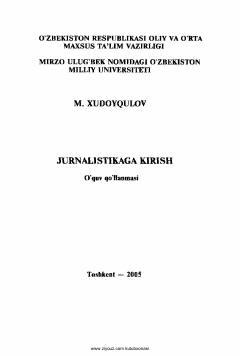

JKOmmaviy axborot vositalari nazariyasi va matbuotshunoslik asoslariga bag'ishlangan o'quv qo'llanma.
Mazkur o'quv qo'llanma jurnalistika fakultetlari talabalari uchun mo'ljallangan bo'lib, ommaviy axborot vositalari nazariyasi, matbuotning mohiyati, kelib chiqish sabablari, funksiya va prinsiplarini o'rganadi. Kitobda matbuotshunoslik fanining asosiy qonuniyatlari, jumladan matbuot tarixi, publitsistika va OAV faoliyatining nazariy asoslari yoritilgan. Undan bo'lajak jurnalistlar va barcha qiziquvchi kitobxonlar foydalanishlari mumkin.